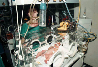

| In
ginocchio anche il reparto neonatale dell'ospedale "Rischiano la vita, un altro raid sarà fatale" Blackout a Belgrado 111 neonati in pericolo |
|
|
 BELGRADO - Sono piccoli, rischiano di morire nelle loro incubatrici dove da giorni lottano per restare in vita: è allarme in un ospedale di Belgrado. Un'altra storia triste, quella riportata dall'agenzia Tanjug e raccontata da Slobodanka Ilic, direttrice del reparto neonatale di uno dei nosocomi della capitale serba. Le bombe alla grafite che nella notte tra domenica e lunedì hanno provocato il black out della città per sei interminabili ore hanno messo in pericolo 111 piccoli, nati prematuri, appena due chilogrammi di peso. Spiega la dottoressa Ilic: "I generatori di emergenza dell'ospedale possono assicurare l'elettricità soltanto per alcune ore ai macchinari di maggiore importanza; tutto questo comunque non basta a garantire cure mediche adeguate a prematuri di un mese di età". Insomma, un altro attacco, altre bombe, un altro black out potrebbe essere fatale. Quando i caccia hanno sganciato i loro missili, nel reparto neonatale, 70 bimbi erano nelle incubatrici e altri nove sotto assistenza respiratoria: "La vita dei neonati è direttamente minacciata. Sì, ho paura che un nuovo bombardamento possa avere conseguenze drammatiche. I dispositivi di emergenza elettrica non sono sufficenti e comunque non sono in grado di erogare per molte ore l'ossigeno e l'elettricità necessari per il funzionamento delle apparecchiature del nostro reparto. Qui ospitiamo neonati con problemi di varia natura, tutti comunque in serio pericolo per la loro vita. Basta con le bombe, dico, e il mio è un appello, per quello che può servire". Chissà se verranno ascoltate le parole della dottoressa Ilic, di sicuro i raid tra domenica e lunedì hanno messo in ginocchio Belgrado e quasi tutta la Serbia. Le bombe alla grafite hanno avviato una nuova strategia di guerra. Che consiste nel provocare continue interruzioni dell'energia elettrica, senza distruggere gli impianti che la producono. La Nato, in altre parole, ha in mano la spina della corrente elettrica in Serbia e ora ha anche in pugno i destini di 111 piccoli che lottano contro la morte. (4 maggio 1999) |
pericolo per 111 neonati Con la grafite Serbia al buio Torna al dossier sulla guerra |